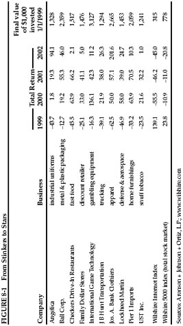
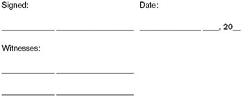

The happiness of those who want to be popular depends on others; the happiness of those who seek pleasure fluctuates with moods outside their control; but the happiness of the wise grows out of their own free acts.
—Marcus Aurelius
Most of the time, the market is mostly accurate in pricing most stocks. Millions of buyers and sellers haggling over price do a remarkably good job of valuing companies—on average. But sometimes, the price is not right; occasionally, it is very wrong indeed. And at such times, you need to understand Graham’s image of Mr. Market, probably the most brilliant metaphor ever created for explaining how stocks can become mispriced. 1 The manic-depressive Mr. Market does not always price stocks the way an appraiser or a private buyer would value a business. Instead, when stocks are going up, he happily pays more than their objective value; and, when they are going down, he is desperate to dump them for less than their true worth.
Is Mr. Market still around? Is he still bipolar? You bet he is.
On March 17, 2000, the stock of Inktomi Corp. hit a new high of $231.625. Since they first came on the market in June 1998, shares in the Internet-searching software company had gained roughly 1,900%. Just in the few weeks since December 1999, the stock had nearly tripled.
What was going on at Inktomi the business that could make Inktomi the stock so valuable? The answer seems obvious: phenomenally fast growth. In the three months ending in December 1999, Inktomi sold $36 million in products and services, more than it had in the entire year ending in December 1998. If Inktomi could sustain its growth rate of the previous 12 months for just five more years, its revenues would explode from $36 million a quarter to $5 billion a month. With such growth in sight, the faster the stock went up, the farther up it seemed certain to go.
But in his wild love affair with Inktomi’s stock, Mr. Market was overlooking something about its business. The company was losing money—lots of it. It had lost $6 million in the most recent quarter, $24 million in the 12 months before that, and $24 million in the year before that. In its entire corporate lifetime, Inktomi had never made a dime in profits. Yet, on March 17, 2000, Mr. Market valued this tiny business at a total of $25 billion. (Yes, that’s billion, with a B. )
And then Mr. Market went into a sudden, nightmarish depression. On September 30, 2002, just two and a half years after hitting $231.625 per share, Inktomi’s stock closed at 25 cents—collapsing from a total market value of $25 billion to less than $40 million. Had Inktomi’s business dried up? Not at all; over the previous 12 months, the company had generated $113 million in revenues. So what had changed? Only Mr. Market’s mood: In early 2000, investors were so wild about the Internet that they priced Inktomi’s shares at 250 times the company’s revenues. Now, however, they would pay only 0.35 times its revenues. Mr. Market had morphed from Dr. Jekyll to Mr. Hyde and was ferociously trashing every stock that had made a fool out of him.
But Mr. Market was no more justified in his midnight rage than he had been in his manic euphoria. On December 23, 2002, Yahoo! Inc. announced that it would buy Inktomi for $1.65 per share. That was nearly seven times Inktomi’s stock price on September 30. History will probably show that Yahoo! got a bargain. When Mr. Market makes stocks so cheap, it’s no wonder that entire companies get bought right out from under him. 2
Would you willingly allow a certifiable lunatic to come by at least five times a week to tell you that you should feel exactly the way he feels? Would you ever agree to be euphoric just because he is—or miserable just because he thinks you should be? Of course not. You’d insist on your right to take control of your own emotional life, based on your experiences and your beliefs. But, when it comes to their financial lives, millions of people let Mr. Market tell them how to feel and what to do—despite the obvious fact that, from time to time, he can get nuttier than a fruitcake.
In 1999, when Mr. Market was squealing with delight, American employees directed an average of 8.6% of their paychecks into their 401(k) retirement plans. By 2002, after Mr. Market had spent three years stuffing stocks into black garbage bags, the average contribution rate had dropped by nearly one-quarter, to just 7%. 3 The cheaper stocks got, the less eager people became to buy them—because they were imitating Mr. Market, instead of thinking for themselves.
The intelligent investor shouldn’t ignore Mr. Market entirely. Instead, you should do business with him—but only to the extent that it serves your interests. Mr. Market’s job is to provide you with prices; your job is to decide whether it is to your advantage to act on them. You do not have to trade with him just because he constantly begs you to.
By refusing to let Mr. Market be your master, you transform him into your servant. After all, even when he seems to be destroying values, he is creating them elsewhere. In 1999, the Wilshire 5000 index—the broadest measure of U.S. stock performance—gained 23.8%, powered by technology and telecommunications stocks. But 3,743 of the 7,234 stocks in the Wilshire index went down in value even as the average was rising. While those high-tech and telecom stocks were hotter than the hood of a race car on an August afternoon, thousands of “Old Economy” shares were frozen in the mud—getting cheaper and cheaper.
The stock of CMGI, an “incubator” or holding company for Internet start-up firms, went up an astonishing 939.9% in 1999. Meanwhile, Berkshire Hathaway—the holding company through which Graham’s greatest disciple, Warren Buffett, owns such Old Economy stalwarts as Coca-Cola, Gillette, and the Washington Post Co.—dropped by 24.9%. 4

But then, as it so often does, the market had a sudden mood swing. Figure 8-1 offers a sampling of how the stinkers of 1999 became the stars of 2000 through 2002.
As for those two holding companies, CMGI went on to lose 96% in 2000, another 70.9% in 2001, and still 39.8% more in 2002—a cumulative loss of 99.3%. Berkshire Hathaway went up 26.6% in 2000 and 6.5% in 2001, then had a slight 3.8% loss in 2002—a cumulative gain of 30%.
One of Graham’s most powerful insights is this: “The investor who permits himself to be stampeded or unduly worried by unjustified market declines in his holdings is perversely transforming his basic advantage into a basic disadvantage.”
What does Graham mean by those words “basic advantage”? He means that the intelligent individual investor has the full freedom to choose whether or not to follow Mr. Market. You have the luxury of being able to think for yourself. 5
The typical money manager, however, has no choice but to mimic Mr. Market’s every move—buying high, selling low, marching almost mindlessly in his erratic footsteps. Here are some of the handicaps mutual-fund managers and other professional investors are saddled with:
So there’s no reason you can’t do as well as the pros. What you cannot do (despite all the pundits who say you can) is to “beat the pros at their own game.” The pros can’t even win their own game! Why should you want to play it at all? If you follow their rules, you will lose—since you will end up as much a slave to Mr. Market as the professionals are.
Instead, recognize that investing intelligently is about controlling the controllable. You can’t control whether the stocks or funds you buy will outper-forms the market today, next week, this month, or this year; in the short run, your returns will always be hostage to Mr. Market and his whims. But you can control:
If you listen to financial TV, or read most market columnists, you’d think that investing is some kind of sport, or a war, or a struggle for survival in a hostile wilderness. But investing isn’t about beating others at their game. It’s about controlling yourself at your own game. The challenge for the intelligent investor is not to find the stocks that will go up the most and down the least, but rather to prevent yourself from being your own worst enemy—from buying high just because Mr. Market says “Buy!” and from selling low just because Mr. Market says “Sell!”
If you investment horizon is long—at least 25 or 30 years—there is only one sensible approach: Buy every month, automatically, and whenever else you can spare some money. The single best choice for this lifelong holding is a total stock-market index fund. Sell only when you need the cash (for a psychological boost, clip out and sign your “Investment Owner’s Contract”—which you can find on p. 225).
To be an intelligent investor, you must also refuse to judge your financial success by how a bunch of total strangers are doing. You’re not one penny poorer if someone in Dubuque or Dallas or Denver beats the S & P 500 and you don’t. No one’s gravestone reads “HE BEAT THE MARKET.”
I once interviewed a group of retirees in Boca Raton, one of Florida’s wealthiest retirement communities. I asked these people—mostly in their seventies—if they had beaten the market over their investing lifetimes. Some said yes, some said no; most weren’t sure. Then one man said, “Who cares? All I know is, my investments earned enough for me to end up in Boca.”
Could there be a more perfect answer? After all, the whole point of investing is not to earn more money than average, but to earn enough money to meet your own needs. The best way to measure your investing success is not by whether you’re beating the market but by whether you’ve put in place a financial plan and a behavioral discipline that are likely to get you where you want to go. In the end, what matters isn’t crossing the finish line before anybody else but just making sure that you do cross it. 8
Why, then, do investors find Mr. Market so seductive? It turns out that our brains are hardwired to get us into investing trouble; humans are pattern-seeking animals. Psychologists have shown that if you present people with a random sequence—and tell them that it’s unpredictable—they will nevertheless insist on trying to guess what’s coming next. Likewise, we “know” that the next roll of the dice will be a seven, that a baseball player is due for a base hit, that the next winning number in the Powerball lottery will definitely be 4-27-9-16-42-10—and that this hot little stock is the next Microsoft.
Groundbreaking new research in neuroscience shows that our brains are designed to perceive trends even where they might not exist. After an event occurs just two or three times in a row, regions of the human brain called the anterior cingulate and nucleus accumbens automatically anticipate that it will happen again. If it does repeat, a natural chemical called dopamine is released, flooding your brain with a soft euphoria. Thus, if a stock goes up a few times in a row, you reflexively expect it to keep going—and your brain chemistry changes as the stock rises, giving you a “natural high.” You effectively become addicted to your own predictions.
But when stocks drop, that financial loss fires up your amygdala—the part of the brain that processes fear and anxiety and generates the famous “fight or flight” response that is common to all cornered animals. Just as you can’t keep your heart rate from rising if a fire alarm goes off, just as you can’t avoid flinching if a rattlesnake slithers onto your hiking path, you can’t help feeling fearful when stock prices are plunging. 9
In fact, the brilliant psychologists Daniel Kahneman and Amos Tversky have shown that the pain of financial loss is more than twice as intense as the pleasure of an equivalent gain. Making $1,000 on a stock feels great—but a $1,000 loss wields an emotional wallop more than twice as powerful. Losing money is so painful that many people, terrified at the prospect of any further loss, sell out near the bottom or refuse to buy more.
That helps explain why we fixate on the raw magnitude of a market decline and forget to put the loss in proportion. So, if a TV reporter hollers, “The market is plunging —the Dow is down 100 points! ” most people instinctively shudder. But, at the Dow’s recent level of 8,000, that’s a drop of just 1.2%. Now think how ridiculous it would sound if, on a day when it’s 81 degrees outside, the TV weatherman shrieked, “The temperature is plunging —it’s dropped from 81 degrees to 80 degrees! ” That, too, is a 1.2% drop. When you forget to view changing market prices in percentage terms, it’s all too easy to panic over minor vibrations. (If you have decades of investing ahead of you, there’s a better way to visualize the financial news broadcasts; see the sidebar on p. 222.)
In the late 1990s, many people came to feel that they were in the dark unless they checked the prices of their stocks several times a day. But, as Graham puts it, the typical investor “would be better off if his stocks had no market quotation at all, for he would then be spared the mental anguish caused him by other persons’ mistakes of judgment.” If, after checking the value of your stock portfolio at 1:24 P.M ., you feel compelled to check it all over again at 1:37 P.M ., ask yourself these questions:
NEWS YOU COULD USE
Stocks are crashing, so you turn on the television to catch the latest market news. But instead of CNBC or CNN, imagine that you can tune in to the Benjamin Graham Financial Network. On BGFN, the audio doesn’t capture that famous sour clang of the market’s closing bell; the video doesn’t home in on brokers scurrying across the floor of the stock exchange like angry rodents. Nor does BGFN run any footage of investors gasping on frozen sidewalks as red arrows whiz overhead on electronic stock tickers.
Instead, the image that fills your TV screen is the facade of the New York Stock Exchange, festooned with a huge banner reading: “SALE! 50% OFF!” As intro music, Bachman-Turner Overdrive can be heard blaring a few bars of their old barn-burner, “You Ain’t Seen Nothin’ Yet.” Then the anchorman announces brightly, “Stocks became more attractive yet again today, as the Dow dropped another 2.5% on heavy volume—the fourth day in a row that stocks have gotten cheaper. Tech investors fared even better, as leading companies like Microsoft lost nearly 5% on the day, making them even more affordable. That comes on top of the good news of the past year, in which stocks have already lost 50%, putting them at bargain levels not seen in years. And some prominent analysts are optimistic that prices may drop still further in the weeks and months to come.”
The newscast cuts over to market strategist Ignatz Anderson of the Wall Street firm of Ketchum & Skinner, who says, “My forecast is for stocks to lose another 15% by June. I’m cautiously optimistic that if everything goes well, stocks could lose 25%, maybe more. ”
“Let’s hope Ignatz Anderson is right, ” the anchor says cheerily. “ Falling stock prices would be fabulous news for any investor with a very long horizon. And now over to Wally Wood for our exclusive AccuWeather forecast.”
The only possible answer to these questions is of course not! And you should view your portfolio the same way. Over a 10- or 20- or 30- year investment horizon, Mr. Market’s daily dipsy-doodles simply do not matter. In any case, for anyone who will be investing for years to come, falling stock prices are good news, not bad, since they enable you to buy more for less money. The longer and further stocks fall, and the more steadily you keep buying as they drop, the more money you will make in the end— if you remain steadfast until the end. Instead of fearing a bear market, you should embrace it. The intelligent investor should be perfectly comfortable owning a stock or mutual fund even if the stock market stopped supplying daily prices for the next 10 years. 11
Paradoxically, “you will be much more in control,” explains neuroscientist Antonio Damasio, “if you realize how much you are not in control.” By acknowledging your biological tendency to buy high and sell low, you can admit the need to dollar-cost average, rebalance, and sign an investment contract. By putting much of your portfolio on permanent autopilot, you can fight the prediction addiction, focus on your long-term financial goals, and tune out Mr. Market’s mood swings.
Although Graham teaches that you should buy when Mr. Market is yelling “sell,” there’s one exception the intelligent investor needs to understand. Selling into a bear market can make sense if it creates a tax windfall. The U.S. Internal Revenue Code allows you to use your realized losses (any declines in value that you lock in by selling your shares) to offset up to $3,000 in ordinary income. 12 Let’s say you bought 200 shares of Coca-Cola stock in January 2000 for $60 a share—a total investment of $12,000. By year-end 2002, the stock was down to $44 a share, or $8,800 for your lot—a loss of $3,200.
You could have done what most people do—either whine about your loss, or sweep it under the rug and pretend it never happened. Or you could have taken control. Before 2002 ended, you could have sold all your Coke shares, locking in the $3,200 loss. Then, after waiting 31 days to comply with IRS rules, you would buy 200 shares of Coke all over again. The result: You would be able to reduce your taxable income by $3,000 in 2002, and you could use the remaining $200 loss to offset your income in 2003. And better yet, you would still own a company whose future you believe in—but now you would own it for almost one-third less than you paid the first time. 13
With Uncle Sam subsidizing your losses, it can make sense to sell and lock in a loss. If Uncle Sam wants to make Mr. Market look logical by comparison, who are we to complain?
Investment Owner’s Contract
I, _____________ ___________________, hereby state that I am an investor who is seeking to accumulate wealth for many years into the future.
I know that there will be many times when I will be tempted to invest in stocks or bonds because they have gone (or “are going”) up in price, and other times when I will be tempted to sell my investments because they have gone (or “are going”) down.
I hereby declare my refusal to let a herd of strangers make my financial decisions for me. I further make a solemn commitment never to invest because the stock market has gone up, and never to sell because it has gone down. Instead, I will invest $______.00 per month, every month, through an automatic investment plan or “dollar-cost averaging program,” into the following mutual fund(s) or diversified portfolio(s):
_________________________________,
_________________________________,
_________________________________.
I will also invest additional amounts whenever I can afford to spare the cash (and can afford to lose it in the short run).
I hereby declare that I will hold each of these investments continually through at least the following date (which must be a minimum of 10 years after the date of this contact): _________________ _____, 20__. The only exceptions allowed under the terms of this contract are a sudden, pressing need for cash, like a health-care emergency or the loss of my job, or a planned expenditure like a housing down payment or a tuition bill.
I am, by signing below, stating my intention not only to abide by the terms of this contract, but to re-read this document whenever I am tempted to sell any of my investments.
This contract is valid only when signed by at least one witness, and must be kept in a safe place that is easily accessible for future reference.
